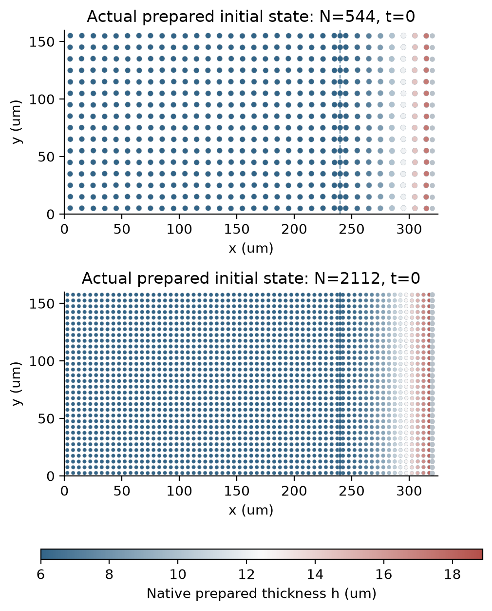
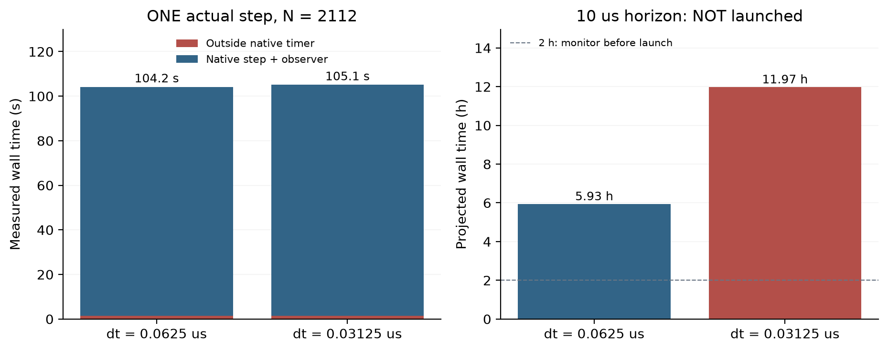

5微米布局能启动，
单步成本也量到了。
保持原模型与材料，粒子数从544增至2112。本轮两次实际单步计算及独立保存步核对均通过；但原生计时每步约103秒，继续到10微秒需要认真安排预算。
两次单步的结束时刻不同，因此不构成时间收敛配对。完整C1和原空间验收仍未通过。
回到真实算例，检验分辨率。
上一轮完整曲面能量诊断发现，同一个40微米波长，从2个粒子加密到4个粒子后，方向恢复刚度明显提高。这支持继续检查空间分辨率；它尚未证明原有运动误差的成因。
现在直接使用原始原生耦合程序，均匀间距降至5微米。几何尺寸320×160微米、物理切面240微米、半径500微米、SDS 6毫摩尔/升、不溶性表活以及准备程序均保持相同；无重力、无分离压，没有新增动力学、拟合参数或人工校正力。

图中内区厚度由原来的变分准备程序求出。这里只展示初始布局与厚度，不把它当作共同演化时刻的空间收敛证据。
每个算例只走一步，但完整核对。
分别使用0.0625和0.03125微秒时间步，各运行一个实际耦合步，保存机械端点与排液端点。原生收支、能量预算、力阈值和准备压力残差门槛均保留。独立SI／GEOS标量核对2个保存步，独立机械核对2个保存步，全部通过。
| 时间步 | 实际模拟终点 | 原生计时 | 力残差／阈值 | 最大液量／表活收支残差 | 单步核对 |
|---|---|---|---|---|---|
| 0.0625微秒 | 0.0625微秒 | 102.66秒 | 0.0111 | 1.78e-15 | 通过 |
| 0.03125微秒 | 0.03125微秒 | 103.58秒 | 0.002584 | 2.59e-15 | 通过 |
力比例门槛为1.000001，四项全局／区域收支门槛为1e-10，能量预算超额门槛1e-7，准备压力残差门槛1e-8。两次准备压力残差约4.70e-13；原生能量预算超额均为0。没有放宽任何阈值。
原生累计计算209.31秒，独立核对6.47秒。本轮没有新执行单元测试；原有24项检查通过原始日志和二进制哈希复核。原生程序的源代码及二进制保持不变，也没有采用隔离几何候选路径。
主要成本在原生耦合步内。

驱动测得的整次耗时约104–105秒；原生计时约103秒。原生计时器在准备与初始导出之后启动，涵盖耦合步和观察输出。两者相差约1.5秒，包括启动、准备及部分IO；这不是单独测得的准备成本。
这说明优先排查耦合步内的成本，比继续猜测准备程序更有依据。还没有把这103秒分解为力学、排液和观察器，也不能将此前的裁剪函数加速比直接套用到这里。
保留10、50、200微秒范围，先把预算讲清楚。
下表仅按首个原生步计时线性外推：1.3 × [原生计时外耗时 + 目标步数 × 首步原生耗时]。后续Newton迭代、状态变化、系统负载和观察输出都会影响实际速度；它是资源估计，不是保证或受控性能比较。
| 时间步／微秒 | 模拟时长／微秒 | 步数 | 含余量墙钟估计 | 半小时监视 | 当前状态 |
|---|---|---|---|---|---|
| 0.0625 | 10 | 160 | 5.93小时 | 启动前需要 | 未启动 |
| 0.0625 | 50 | 800 | 29.66小时 | 启动前需要 | 未启动 |
| 0.0625 | 200 | 3200 | 118.63小时 | 启动前需要 | 未启动 |
| 0.03125 | 10 | 320 | 11.97小时 | 启动前需要 | 未启动 |
| 0.03125 | 50 | 1600 | 59.85小时 | 启动前需要 | 未启动 |
| 0.03125 | 200 | 6400 | 239.39小时 | 启动前需要 | 未启动 |
先核实组装成本，再决定长跑。
下一步单独计时排液能量的值、压力、二阶矩阵组装及其向量作用，确认具体瓶颈。源码中的二阶组装含多次稠密外积，是一个待验证的成本线索；目前没有测得它占总耗时多少，也没有实施新的加速。
若证据支持，将在DRIFT自己的能量模块中测试保持数学结果的局部非零组装，并与原值、压力、Hessian及实际耦合轨迹对照。常见稀疏装配可参考Eigen官方教程；这是计算实现思路，不能当作新的排液物理创新，也不改共享求解后端。
实际10微秒时间／空间配对仍要完成，原2%时间、10%空间门槛保持不变。只有相关原生与独立核对通过、预算和监视落实后，才扩大计算。
哪些问题仍然开放？
原20→10微米、10微秒的空间比较仍未通过，膜厚变化与位移差异49.56%和76.12%。本轮5微米的两个终点分别为0.0625和0.03125微秒，不能用它们宣称10微秒或完整时间／空间收敛。
独立物理法向通量和牵引力、局部边缘的交换系数、新薄膜元厚度比、整体条纹和保留工况实验预测仍未完成。此前规则布局的四项面积差分失败保持原状态，几何候选的计时字段字节门槛失败也没有改判。C2速率继续要求独立物理依据。
数据与复现
展开冻结计划、原生记录、独立核对及全部原始数据
- 事前计划与预算规则 · 源码和归档映射 · 完整命令、参数和源码／二进制哈希
- 两次原生终态 · 摘要 · 逐项预算与未启动状态 · 初始图来源
- 独立核对执行记录 · 审计源码核验 · 0.0625微秒核对封存 · 0.03125微秒核对封存
- 原生／独立核对日志 · 22份原生文件字节清单 · 恢复脚本
- 完整原始数据分卷1
- 完整原始数据分卷2
- 完整原始数据分卷3
- 恢复：
python restore_raw.py REPORT_DIRECTORY NEW_OUTPUT_DIRECTORY，拒绝覆盖，并校验每份原始文件SHA256。 - 原全域加密轨迹和未通过的空间检查 · 完整曲面能量诊断